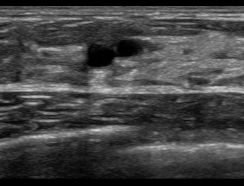

Ficha del catálogo
Quiste simple de mama
- Sistema
- Mama
- Modalidad
- US
- Región
- Mama
- Dificultad
- Básico
Es una cavidad llena de líquido derivada de la dilatación de la unidad terminal ductolobulillar y constituye el hallazgo benigno más común en la mama. Aparece sobre todo entre los treinta y cinco y los cincuenta años, con frecuencia de forma múltiple y bilateral. Puede ser asintomático o presentarse como un nódulo palpable que fluctúa con el ciclo menstrual.
Técnica
El ultrasonido con transductor lineal de alta frecuencia es la técnica que permite afirmar con seguridad la naturaleza quística de un nódulo. La exploración se hace en dos planos ortogonales, documentando la localización horaria y la distancia al pezón. En la mamografía el quiste se ve como una opacidad circunscrita indistinguible de un nódulo sólido, lo que obliga a completar con ultrasonido.
Qué observar
- Contenido completamente anecoico en toda la lesión
- Pared imperceptible y márgenes circunscritos
- Refuerzo acústico posterior evidente
- Sombras laterales finas en los bordes de la lesión
- Ausencia total de vascularización interna en el Doppler
- Forma ovalada o redondeada con orientación paralela a la piel
Hallazgos
El quiste simple aparece como una estructura redondeada u ovalada, anecoica, de pared imperceptible, con refuerzo acústico posterior marcado y sombras finas en los bordes laterales. No presenta tabiques gruesos, nódulos murales ni vascularización interna. Los quistes agrupados en racimo mantienen el mismo contenido anecoico separado por tabiques finos y también son benignos.
Perlas
Una ganancia excesiva o un foco mal colocado llenan de ecos artefactuales el interior de un quiste y lo hacen parecer sólido. Antes de informar un nódulo sólido conviene bajar la ganancia, colocar el foco en la lesión y buscar el refuerzo posterior, ya que un verdadero nódulo sólido no lo produce de esa forma.
Diagnóstico diferencial
- Quiste complicado
- Contiene ecos internos homogéneos móviles o un nivel líquido, sin nódulo mural ni vascularización.
- Quiste complejo
- Presenta tabiques gruesos, componente sólido vascularizado o pared engrosada, y obliga a biopsia.
- Fibroadenoma
- Es sólido, hipoecoico y homogéneo, con transmisión posterior escasa y vascularización interna ordenada.
- Galactocele
- Aparece en el contexto de lactancia y puede mostrar un nivel graso o contenido ecogénico que se moviliza.
Simuladores
- Lobulillo graso hipoecoico rodeado de tejido fibroglandular
- Ectasia ductal focal vista en un solo plano
- Quiste complicado con contenido ecogénico homogéneo
Por modalidad
- RX
- Se observa una opacidad circunscrita de densidad media, indistinguible de un nódulo sólido sin ultrasonido.
- RM
- Muestra señal muy alta en secuencias potenciadas en T2 y ausencia de realce tras contraste.
- US
- Establece el diagnóstico con criterios estrictos de contenido anecoico, pared imperceptible y refuerzo posterior.
Protocolo
Ultrasonido con transductor lineal de doce megahercios o superior, foco a la profundidad de la lesión y ganancia reducida hasta confirmar que el interior queda realmente anecoico. Se documenta en dos planos con medidas y localización horaria, añadiendo Doppler color para comprobar la ausencia de flujo interno. La aspiración solo se plantea cuando el quiste es sintomático o a tensión.
Clasificación
En el sistema BI-RADS el quiste simple corresponde a la categoría 2, es decir, hallazgo benigno que no requiere seguimiento especial. El quiste complicado suele asignarse a la categoría 3 con control a corto plazo, mientras que el quiste complejo con componente sólido pasa a categoría 4 e indica biopsia.
Errores frecuentes
- Informar contenido ecogénico artefactual como nódulo sólido por exceso de ganancia
- No aplicar Doppler y pasar por alto un nódulo mural vascularizado
- Asumir naturaleza quística en mamografía sin confirmación ecográfica

quiste simple mama anecoico refuerzo posterior BI-RADS 2 ultrasonido mamario lesión benigna